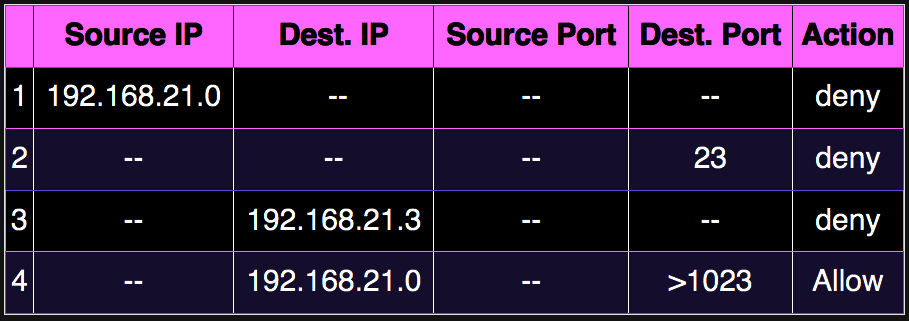
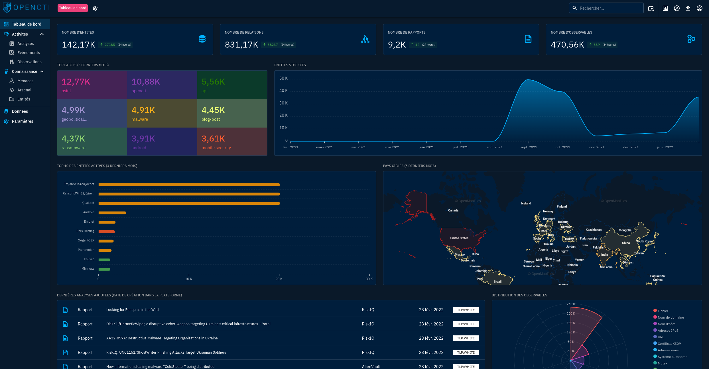
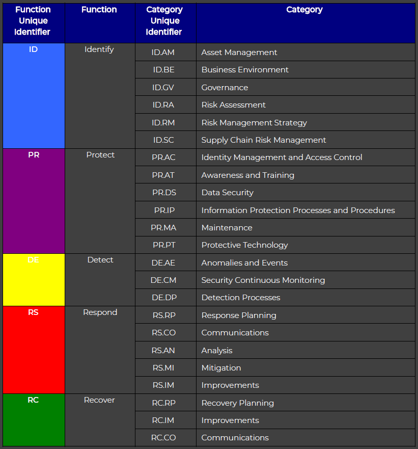
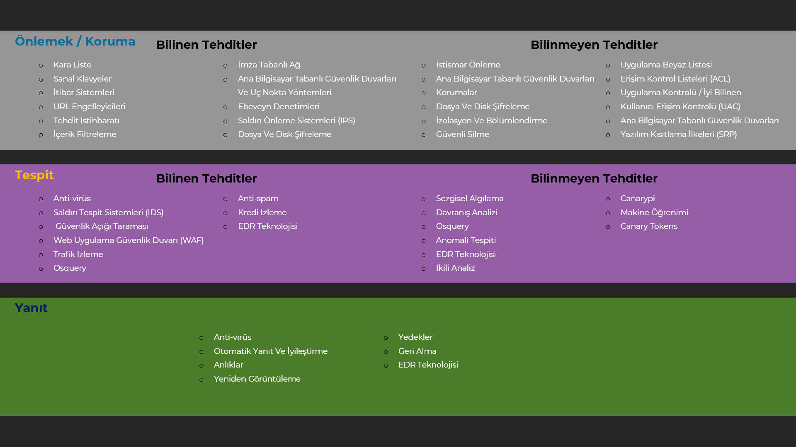

Ağ Teknolojileri Article
IDS/IPS
Intrusion Detection Systems kelimelerinin kısaltmasıdır. Saldırı
Tespit ve Önleme Sistemi olarak da bilinir. Kötü amaçlı etkinlikler
için ağ veya sistem etkinliklerini izleyen bir ağ güvenliği
uygulamasıdır.
IPS tipik olarak gözlemlenen olaylarla ilgili bilgileri kaydeder, güvenlik yöneticilerine gözlemlenen önemli olayları bildirir ve raporlar üretir.
IPS, tespit edilen bir tehdidi engellemeye çalışır. IPS'nin saldırıyı durdurmak, güvenlik ortamını değiştirmek veya saldırının içeriğini değiştirmek şeklinde çeşitli yanıt teknikleri kullanır.
(IPS) Sınıflandırılması:
İzinsiz Girişi Önleme Sistemi (IPS) 4 tipte sınıflandırılır:
- Ağ Tabanlı Saldırı Önleme (NIPS)
- Kablosuz Saldırı Önleme (WIPS)
- Ağ davranışı analizi (NBA)
- Ana Bilgisayar Tabanlı Saldırı Önleme
Protokol etkinliğini analiz ederek tüm ağı şüpheli trafik açısından izler.
Kablosuz ağ protokollerini analiz ederek bir kablosuz ağı şüpheli trafik açısından izler.
DDOS saldırıları, belirli kötü amaçlı yazılım biçimleri ve politika ihlalleri gibi olağandışı trafik akışları oluşturan tehditleri belirlemek için ağ trafiğini inceler.
Şüpheli etkinlikler için bir ana bilgisayarın içinde meydana gelen olayları tarayaran bir yazılımdır.
SIEM
SIEM yani, SIM (Security İnformation Management) ve SEM (Security Event Management) işlevlerini tek bir güvenlik yönetim sisteminde (Güvenlik Bilgileri ve Olay Yönetimi) birleştirir.
SIEM teknolojisi serverlardan, son kullanıcı cihazlarından, ağ cihazlarından ve uygulamalardan güvenlikle ilgili bilgileri toplar.
Güvenlik Bilgileri ve Olay Yönetimi (SIEM) çözümleri, verileri kategorilere ayırır ve olası bir güvenlik sorunu tespit edildiğinde önceden belirlenmiş kurallara göre bir uyarı gönderebilir veya başka bir şekilde yanıt verebilir.
Ağ genelinde toplanan verilerin toplanması ve analizi, güvenlik ekiplerinin büyük resmi görmelerini, ihlalleri veya olayları erken aşamalarda belirlemelerini ve hasar oluşmadan önce müdahale etmelerini sağlar.
SIEM sistemi aşağıdaki kaynakları loglar ve yorumlar:
- Firewall
- Web Filtreleri
- Endpoint Güvenliği
- Access Pointler
- Routerlar
- Switchler
- Uygulama Sunucuları
- Honeypot Sistemleri
SIEM sistemleri, analiz, raporlar ve izleme için bu günlüklerden verilere bakar. BT ekipleri, bu sonuçlara dayanarak güvenlik olaylarına etkili ve verimli bir şekilde yanıt verebilir.
Firewall
Firewall, tanımlanan kurallara dayanarak izleyen ve eylemler gerçekleştiren (trafiğe izin verme veya trafiği reddetme) bir ağ güvenlik sistemidir.
Tek bir cihaz, cihazlar veya server üzerinde çalışan yazılımlar tarafından gerçekleştirilir.
Firewall Metodolojileri
Firewall'ların uygulanabileceği belirli yöntemler vardır ve Firewall'lar, nesline göre kategorize edilebilir. Bunlar aşağıdaki gibidir:
- Birinci Nesil - Paket Filtreleme Firewall
- 192.168.21.0 ağından gelen paketler engellenir.
- Dahili TELNET sunucusuna (port 23) yönelik gelen paketler engellenir.
- Ana bilgisayar 192.168.21.3'e yönelik gelen paketler engellenir.
- 192.168.21.0 ağına bilinen tüm servislere izin verilir.
- İkinci Nesil - Durum Denetimli Firewall
- Üçüncü Nesil - Uygulama Katmanı Firewall
- Yeni Nesil Firewall (NGFW)
Paket filtreleme firewall, giden ve gelen paketleri izleyerek ve bunların kaynak ve hedef IP adreslerine, protokollere ve bağlantı noktalarına göre geçmesine veya durmasına izin vererek ağ erişimini denetlemek için kullanılır. Taşıma protokolü katmanındaki trafiği analiz eder (ancak esas olarak ilk 3 katmanı kullanır).
Paket Firewal'ları her paketi yalıtılmış olarak ele alır. Bir paketin mevcut bir trafik akışının parçası olup olmadığını söyleyemezler. Yalnızca benzersiz paket başlıklarına dayalı paketlere izin verebilir veya reddedebilir.
Paket filtreleme Firewall, paketin iletilip atılmayacağına karar veren bir filtreleme tablosu tutar. Verilen filtreleme tablosundan paketler aşağıdaki kurallara göre filtrelenecektir:

Durum Bilgisi Olan Paket Denetimi gerçekleştirir. Paket filtreleme Firewall'ının aksine paketin bağlantı durumunu belirleyebilir ve bu da onu daha verimli hale getirir.
TCP akışları gibi, üzerinde dolaşan ağ bağlantısının durumunu izler.
Bu nedenle, filtreleme kararları yalnızca tanımlanmış kurallara değil, aynı zamanda durum tablosundaki paketin geçmişine de dayanacaktır.
Uygulama Katmanı Firewall, herhangi bir OSI katmanındaki paketleri uygulama katmanına kadar inceleyebilir ve filtreleyebilir.
Belirli içeriği engelleme ve belirli uygulamaların ve protokollerin (HTTP, FTP gibi) ne zaman kötüye kullanıldığını tanıma yeteneğine sahiptir.
Başka bir deyişle, Uygulama Katmanı Firewall'ı proxy sunucuları çalıştıran ana bilgisayarlardır.
Bir Proxy Firewall, Firewall'ın her iki tarafı arasındaki doğrudan bağlantıyı engeller, her paketin proxy'den geçmesi gerekir.
Önceden tanımlanmış kurallara dayalı trafiğe izin verebilir veya engelleyebilir.
Not: Uygulama Katmanı Firewall'ı Ağ Adresi Çevirmeni (NAT) olarak da kullanılabilir.
Malware ve uygulama katmanı saldırıları gibi modern güvenlik ihlallerini durdurmak için bugünlerde yeni Nesil Firewall kullanılıyor. NGFW, ağı bu modern tehditlerden korumak için Derin Paket Denetimi, Uygulama Denetimi, SSL / SSH denetimi ve birçok işlevden oluşur.
Firewall Türleri
Güvenlik duvarları genellikle iki tiptir: Host Tabanlı ve Ağ Tabanlı.
- Host Tabanlı Firewall
- Ağ Tabanlı Firewall
Gelen ve giden her paketi denetleyen her ağ düğümüne ana bilgisayar (Host) tabanlı bir firewall yüklenir. İşletim sisteminin bir parçası olarak gelen bir yazılım uygulaması veya uygulama paketidir. Host Tabanlı Firewalla ihtiyaç vardır, çünkü ağ güvenlik duvarları güvenilir bir ağ içinde koruma sağlayamaz. Host Tabanlı Firewall, her ana bilgisayarı saldırılara ve yetkisiz erişime karşı korur.
Ağ düzeyinde Firewall işlevi. Başka bir deyişle, bu güvenlik duvarları ağdaki tüm gelen ve giden trafiği filtreler. Güvenlik duvarında tanımlanan kuralları kullanarak trafiği filtreleyerek iç ağı korur. Bir Ağ Firewallnda iki veya daha fazla ağ arabirim kartı (NIC) olabilir. Ağ tabanlı bir Firewall genellikle özel yazılım yüklü özel bir sistemdir.
EDR
Ağdaki uç noktaları (yani ağları değil, bilgisayarları) sürekli olarak izleyerek, daha fazla analiz için bu verileri toplayarak, herhangi bir şüpheli etkinlik veya tehdidi tespit ederek ve ardından bunları rapor ederek veya bunlara yanıt vererek kullanılır.
Ayrıca Gelişmiş Kalıcı Tehditleri (APT) ve dosyasız saldırıları, kötü amaçlı komut dosyalarını ve çalınan kullanıcı kimlik bilgilerini de önleyebilir.
Honeypot
Honeypot'lar, siber tehditler, saldırganlar, araçları ve ayrıca tehdit aktörü taktikleri, teknikleri ve prosedürleri (TTP'ler) ve
saldırıyla ilgili ek değerli bilgiler hakkında bir başka büyük güvenlik bilgisi kaynağı olabilir.
Bal küpleri aracılığıyla toplanan bilgiler, kuruluşunuza saldırgan davranışına ilişkin içgörüler sağlayabilir.
Ayrıca Honeypotlar, henüz imzaları veya algılama yöntemleri olmayan yeni ortaya çıkan saldırılara ve tehditlere ışık tutabilir.
Bu nedenle, bir Honeypot siber tehdit istihbaratınız için olağanüstü değerli olabilir.
Bir honeypot, kritik altyapıyı, hizmetleri ve yapılandırmaları simüle etmek için kullanılan kasıtlı olarak savunmasız bir sistemdir. Siber güvenlik uzmanları bu bilgisayar sistemi
ni tuzak kurmak ve potansiyel saldırganları cezbetmek için bir tuzak olarak kullanırlar.
Honeypotlar, gelişmiş tehditleri tespit etmek, analiz etmek ve savunmak amacıyla bir tür olay tespit ve müdahale teknolojisi olan aldatma teknolojisi kategorisine girer. Siber güvenlik ekipleri, stratejik olarak konuşlandırılan sahte BT varlıklarıyla potansiyel olarak etkileşime girecek ve değerli hedefler olarak görünecek saldırganları çekmek için aldatma teknolojisi olan honeypotları kullanarak bu hedefe ulaşıyor.
Honeypotlar saldırganların bu sisteme girmesine izin verecek şekilde tasarlanmıştır, bu nedenle siber güvenlik ekipleri saldırının kontrollü bir ortamda yapılmasını beklemektedir. Bu, tehdit analistlerinin kurallar yazmasına, ortaya çıkan çeşitli saldırılara karşı korunmak için yeni önlemler oluşturmasına ve gelecekte tespit edilmek üzere veri akışınıza geri beslenebilecek tehdit istihbarat listeleri oluşturmasına olanak tanır.
Honeypot Türleri
- Yüksek etkileşimli Honeypot
- Düşük etkileşimli Honeypot
- Malware Honeypot
- Spam Honeypot
- İstemci Honeypot
Tam ölçekli bir üretim sistemini taklit etmek yerine, yüksek etkileşimli honeypotlar gerçek bir üretim sisteminin tüm hizmetlerini çalıştırmayı taklit eder.
Örnek: Tehdit aktörünün saldırı sırasında yaptığı her şeyi kaydedecek şekilde yapılandırılmış tam işletim sistemleri. Bununla birlikte, bu işletim sistemi honeypotu, saldırganın kötü amaçlı yazılımları honeypot ağının dışındaki varlıklara yaymasını önler (çoğunlukla daha fazla honeypottan oluşur).
Çoğunlukla bir üretim ortamında konuşlandırılan düşük etkileşimli honeypotlar, yalnızca sınırlı sayıda hizmet çalıştırarak erken algılama mekanizmaları olarak işlev görür. Saldırganlar, önemli sınırlamaları olduğu ve tamamen işlevsel hizmetlerden yoksun olduğu için bu honeypot türüyle fazla bir şey yapamazken, kullanımı kolaydır ve siber güvenlik ekipleri bunu hızlı bir şekilde dağıtabilir.
Örnek: Genel ve kötü amaçlı internet trafiğindeki güvenlik açığını tarayan veya denetleyen, örneğin otomatik kaba kuvvet uygulayanlar, SSH botları ve giriş sanitizasyon denetleyicisi botları gibi otomatikleştirilmiş botlar.
Bazı durumlarda saldırganlar açık veya savunmasız sistemlere bulaşmaya çalışır ve bunu açık veya savunmasız bir kutuda bir kötü amaçlı yazılım örneği barındırarak denerler. Kötü amaçlı yazılımları rastgele bir sunucuda barındırmak, sunucunun IP'si tehdit listesinde olmadığı için kötü amaçlı yazılımların BT ortamına sızmasına daha kolay erişim sağlar. Bu nedenle, honeypotlar büyük miktarda yeni kötü amaçlı yazılım örneği elde etmek için kullanılabilir.
Örnek: Taklit edilen aygıta bulaşması için bir makineye bulaşan USB yayıcı bir kötü amaçlı yazılımı kandıran bir USB aygıtını taklit eden bir honeypot.
Spam honeypotlar, açık proxy'leri taklit etmek ve mevcut spam ve e-posta spam tabanlı kötü amaçlı yazılım kampanya eğilimleri hakkında bilgi almak için posta aktarımlarında kullanılır.
Örnek: Spam e-postalarını göndermek için kuruluşun SMTP aktarıcısını neyin kullandığına ilişkin bilgilerin yanı sıra mevcut spam eğilimleri hakkında bilgi sağlayabilen sahte açık SMTP aktarıcıları. Diğer spam honeypot biçimleri, sahte bilgileri, kötü amaçlı yazılımları ve kimlik avı bağlantılarını yaymak için kullanılabilecek forum veya yorum honeypotlarıdır.
Çoğu honeypot bağlantıları dinleyen sunucular olsa da, istemci Honeypot daha hedefli saldırılara yardımcı olmak için bir istemcinin ortamının önemli bölümlerini çoğaltır. Bu honeypotlar için gerçek müşteri verilerinin kullanılmadığına dikkat etmek çok önemlidir. Bunun yerine, istemci honeypotları sahte ana bilgisayarın okunaklı bir ana bilgisayarla aynı görünmesini sağlar.
Örnek: İşletim sistemi bilgileri, çalışan hizmetler ve açık portlar gibi elle yazdırılabilir verileri kullanma.
NDR
Network Detection and Response (NDR), ağınızdan geçen, bilinen veya bilinmeyen tehditlere karşı tam görünürlük elde etmek için aşamalı bir güvenlik çözümüdür.
NDR, verimli iş akışları ve otomasyon dahil olmak üzere ağ trafiğinin merkezi, makine tabanlı analizini ve yanıt çözümlerini sağlar.
Ekibinizin neden ağ güvenliği stratejiniz için izinsiz giriş algılama ve önleme sistemleri (IDS / IPS) gibi eski güvenlik araçlarını kullanamadığını merak ediyor olabilirsiniz.
Ne yazık ki, güvenlik ekipleri daha geniş analiz gerektiren ağ güvenliği tehditlerini tespit etmek için imza tabanlı güvenlik araçlarına güvenemez.
İmza tabanlı güvenlik araçları, ağdaki saldırıları tanımak için daha önce imzalar yazılmadıkça yeni saldırıları algılayamaz.
Bu eski araçlar aynı zamanda birden fazla veri noktasında bağlantı bulamaz veya potansiyel tehditleri tanımak için zaman içinde verilere bakmaz.
Ek olarak, yanıt yeteneklerinde fazla bir şey sunmuyorlar.
NDR çözümleri, ekiplere ağ kaynaklı tehdidi mümkün olan en kısa sürede tespit etmek için ilgili ağ etkinliklerinin gerçek zamanlı farkındalığını sağlar.
Merkezi Log Sistemi
Merkezi günlüğe kaydetme, ağlardan, altyapıdan ve uygulamalardan günlükleri depolama ve analiz için tek bir konumda toplama işlemidir.
Bu, yöneticilere ağ üzerindeki tüm etkinliklerin birleştirilmiş bir görünümünü sağlayarak sorunları tanımlamayı ve gidermeyi kolaylaştırabilir.
Günlükler, BT sistemindeki sistem etkinlikleri, olaylar veya değişikliklerin denetim izini sağlar.
Sistem işlevselliği sorunlarını, performans sorunlarını veya güvenlik olaylarını gidermeye yardımcı olabilirler.
Sistem günlükleri, sistemde ne zaman değişiklik yapıldığını ve bunları kimin yaptığını belirlemek için kullanılır.
Ek olarak, düzenleyici gereklilikler için günlükler genellikle gereklidir.
Örneğin, veritabanınız yavaş çalışıyorsa, veritabanı yavaş sorgu günlüklerini incelemek tek çözüm olmayabilir.
Çoğu sistem Front-end, ara katman yazılımı ve ardından veritabanlarıyla katmanlanır.
Temel sunucu ve depolama alt sisteminin yanı sıra ad çözümleme performansı ve ağdan oluşturulan günlüklere bakmanız gerekebilir.
Bu nedenle, dağıtılmış bir sistemde gerçekte neler olup bittiğini anlamanın tek yolu, ağdaki günlüğe kaydedilen tüm olayları gerçek zamanlı olarak toplamaktır.
Bu günlükleri içerir:
- Sunucu altyapısı
- Depolama
- Veri tabanı
- API ağ geçitleri
- Yük dengeleyiciler
- Firewalls ve diğerleri...
Bu yaklaşım zaman alıcıdır ve önemli olayları bir noktada veya başka bir noktada kaçıracağınızı neredeyse garanti eder. Ancak, yine de bu günlükleri yoksaymayı göze alamazsınız. Birden fazla altyapı bileşenine (belki de düzinelerce) erişmek için her gün manuel olarak oturum açmak, yalnızca yüzlerce (veya binlerce) günlük satırını okumak imkansız noktaya kadar külfetlidir.
Merkezi günlüğe kaydetmenin bazı avantajlarını düşünelim. Bu nedenle tek pratik çözüm, tek bir görüntüleme sistemine sahip olmaktır. Tüm sistemlerinize otomatik olarak bağlanabilen ve günlüklerini gerçek zamanlı olarak toplayabilen ve daha sonra bunları çekici, anlaşılması kolay bir arayüzde sunabilen bir çözüm.
OpenCTI

OpenCTI, kuruluşların siber tehdit istihbarat bilgilerini ve gözlemlenebilirlerini yönetmelerini sağlayan açık kaynaklı bir platformdur.
Siber tehditler hakkında teknik ve teknik olmayan bilgileri yapılandırmak, depolamak, düzenlemek ve görselleştirmek amacıyla oluşturulmuştur.
Kaynak: OpenCTI - GitHub
NIST

NIST Siber Güvenlik Çerçevesi, bir kuruluşun siber güvenlik programını başlatmasına veya geliştirmesine yardımcı olabilir.
Etkili olduğu bilinen uygulamalardan yola çıkarak, kuruluşların siber güvenlik duruşlarını geliştirmelerine yardımcı olabilir.
Siber güvenlik konusunda hem iç hem de dış paydaşlar arasındaki iletişimi teşvik eder ve daha büyük kuruluşlar için
siber güvenlik risk yönetimini daha geniş kurumsal risk yönetimi süreçleriyle daha iyi bütünleştirmeye
ve uyumlu hale getirmeye yardımcı olur.
Kaynak: NIST Homepage
Eğitimimde bahsettiğim diğer bir diyagram:
bkz.: Udemy - Siber Güvenlik Eğitimi
